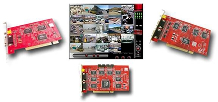

калькулятор
- USD
- UAH
- грн c НДС
- +38 (044) 111-33-33
- +38 (044) 111-33-34
- +38 (044) 111-33-35

калькулятор
Новости
МГТС и «ГОЛЬФСТРИМ» запустили в Москве охранный сервис для малого бизнеса
06 февраля в 11:30
Риски, с которыми сталкиваются собственники и менеджеры коммерческих, промышленных и общественных зданий, становятся всё разнообразней. Одним из следствий этого является усложнение задач по обеспечению экстренной эвакуации людей из этих зданий. Примером такого усложнения являются крупные торговые центры с запутанной планировкой.  Они пришли на смену небольшим магазинам, каждый из которых имел свой выход на улицу. Решать проблему эвакуации из торговых центров помогают современные технологии. По мере их развития совершенствуется техника, с помощью которой производится оповещение людей об экстренной ситуации и контролируется их перемещение к выходу. Традиционная сирена и имитация каких-то иных звуков, например пожарного колокола, неинформативны. Люди вправе не знать, что они означают, и не воспринимать их всерьёз. Современные системы оповещения позволяют проигрывать заранее записанные голосовые сообщения или делать объявления «вживую». Через них людям поступит вся необходимая информация о возникшей опасности и о предписываемых им путях эвакуации. Одно из новшеств, которое, как ожидается, распространится в ближайшем будущем, — динамические световые знаки. В отличие от традиционных указателей, они могут менять своё содержание в зависимости от того, как развивается ситуация. К примеру, если где-то возникает затор, то людской поток может перенаправляться к другому выходу. В более отдалённой перспективе к участию в обеспечении эвакуации могут быть подключены системы видеоаналитики. Они откроют практически неразвитое до сих пор направление — учёт числа находящихся в здании людей, с последующей проверкой в ходе эвакуации того, сколько из них реально покинуло здание. В ритейле начинает внедряться подсчёт числа пришедших людей с помощью функций, реализованных в панорамных камерах. Данные этого подсчёта вполне могут использоваться при экстренной ситуации. Поскольку при этом возможен и отдельный подсчёт числа выходящих, возникает шанс с помощью этих же камер считать количество тех, кто уже успел покинуть здание, ставшее опасным. И хотя точность данного метода и не гарантирует надёжного учёта каждого человека, он может хорошо подойти для общей оценки ситуации. Отслеживать людей теперь можно и по их смартфонам. Они есть не у всех, но проверить, что хотя бы обладателей смартфонов в здании не осталось — это уже немало. Экстренная ситуация — не тот случай, когда кто-то стал бы жаловаться на нарушение его прав на частную жизнь.
Вернутся к списку новостей >>
Популярные
записи
Новые технологии обеспечат чёткую эвакуацию
06 февраля в 11:30
Риски, с которыми сталкиваются собственники и менеджеры коммерческих, промышленных и общественных зданий, становятся...
Новые технологии обеспечат чёткую эвакуацию
06 февраля в 11:30
Риски, с которыми сталкиваются собственники и менеджеры коммерческих, промышленных и общественных зданий, становятся...